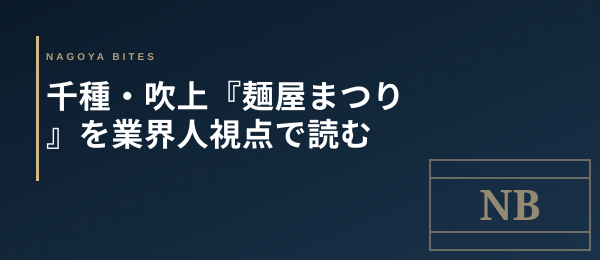

今日の1軒
千種・吹上『麺屋まつり』を業界人視点で読む
2026年5月、千種区吹上の『麺屋まつり 名古屋店』が業界人の深夜の選択肢に食い込み始めた。三重県伊賀の本店から続く濃厚鶏白湯と、伊賀黒ラーメンの2本柱。直近1ヶ月で複数の名古屋メディアが連続掲載し、Xでも行列の投稿が並ぶ。業界人視点で価格帯・カウンター席の回転・名古屋ラーメン市場での立ち位置・業界人がリピートする条件を読む。

この記事はNAGOYA BITES — 名古屋の厳選1,100店超を業界視点で紹介するグルメガイドの一部です。
2026年4月22日、伊賀のラーメンが千種区に上陸
2026年4月22日、三重県伊賀市の人気店『麺屋まつり』の名古屋初進出店が、千種区吹上2-1-5にオープンした。吹上ホール徒歩2分、吹上駅徒歩10分、鶴舞駅徒歩12分の立地。本店は2023年3月創業で、伊賀の地酒蔵に近い場所柄もあり、関西圏ではブラックラーメンの新興勢力として知られていた。
2026年5月時点で名古屋情報通・千種さん（地域情報サイト）・名古屋メイト千種の3媒体が連続掲載。Xでは公式アカウントの開店告知が引用RTを伸ばし、直近のレビュー投稿数も増え続けている。新店ラッシュの中でも珍しく、開店3週間で固定客がつき始めた1軒だ。
価格帯の読み方 — 券売機1000円帯のアラカルト構造
業界人が新店ラーメンを読む時、まず見るのは券売機の構成。『麺屋まつり』は濃厚鶏白湯と伊賀黒（ブラック）の2本柱を1000円前後に置き、替え玉・チャーシュー増し・味玉などのアラカルトを別建てで積み上げる構造。コース感のない単品+トッピング型なので、最終会計は1100〜1500円帯に収まる。
ドリンク別の業態ではあるが、深夜帯のビール1杯を加えても2000円を超えない。業界人が締めに使う基準として、「飲んだ後でも財布が痛くない」一品単価1500円以下のラインは死守されている。
オペの裏側 — カウンター中心、予約不可、深夜の繁忙ピーク
席はカウンター主体で、テーブル席は少数。予約は受け付けず、券売機→着席→提供→退店の回転を厳格に保つ業態。1杯あたりの提供時間が短く、ピークでも30〜40分の滞在で回る設計。
業界人が見る繁忙時間帯は2つ。1つ目は11時半〜13時のランチ。吹上ホール周辺のイベント客と地元の昼客が重なる。2つ目は22時以降の深夜帯。栄や鶴舞で飲んだ業界人が、車で6〜10分の立地を頼って締めに流れる。週末23時前後は外待ち5〜8人がつくこともある。
名古屋ラーメン市場での立ち位置 — 競合との差別化
名古屋の濃厚鶏白湯はすでに『鶏麺ジョー之助』『一滴入魂 田』『陽はまた昇る』など強豪が並ぶ激戦区。伊賀黒（ブラック）と二本柱で構える『麺屋まつり』の差別化は3点ある。
1. 二本柱の振り幅。 濃厚鶏白湯と伊賀黒は対照的なベクトル。「今日は重め」「今日は醤油」の気分差で同じ店をリピートできる構造を持つ店は、栄〜千種圏の深夜ラーメンシーンでは多くない。業界人がリピートしやすい設計だ。
2. 伊賀発の希少性。 名古屋ラーメン市場は東京・福岡系の出店が中心で、関西圏（特に伊賀）発のラーメンは存在自体が珍しい。「他では食べられない地方の系譜」は、業界人が新店を覚える理由として強い。
3. 中継地・吹上の優位性。 栄〜鶴舞〜千種の動線上にあり、深夜の業界回遊で「ちょっと寄れる」距離。栄の深夜ラーメンが満席でも、車で6分流せばここがある。
業界人がリピートする条件 — 通うべき時間帯と頼み方
編集部の目利きでは、『麺屋まつり』を業界人視点で最も生かす条件は3つ。
狙うべき時間帯は22時以降。 ランチピークは観光・イベント客が混じり、業界人の本来の客層と濁る。22時以降に行けば、同業の常連と並ぶカウンターになる。
初回は伊賀黒から。 業界人が新店を測るなら、その店の希少性を象徴する一品を最初に頼む。濃厚鶏白湯は名古屋に強豪が多いため比較軸が定まりにくいが、伊賀黒は『この店でしか食べられない構造』を直で確認できる。
替え玉とトッピング設計を見る。 業界人がオペを測る最後のチェックポイントは替え玉のタイミング。替え玉提供までの所要時間と、麺の茹で時間管理の安定度が、新店の本物度を分ける。開店3週間でこの安定度を保てているのが、編集部が『定着可能性が高い』と判断した最大の理由だ。
Inside Perspective — 業界人の目利き
- 券売機1000円帯+アラカルト構造で最終会計1100〜1500円。深夜の締めで財布を痛めない単価設計
- ランチピークと22時以降の深夜ピークの二山構造。22時以降に行けば同業の常連と並ぶカウンターに
- 初回は伊賀黒から頼む。名古屋ラーメン市場で希少な関西伊賀発の二本柱が、業界人のリピート理由を作る
麺屋まつり 名古屋店
三重県伊賀市の人気店の名古屋初進出。濃厚鶏白湯と伊賀黒ラーメンが2本柱。2026年4月22日オープン、千種区吹上2-1-5（吹上ホール徒歩2分）